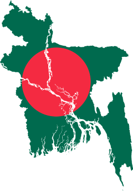

WELCOME TO OUR NEW PAGE .
National symbols of Bangladesh

The national symbols of Bangladesh consist of symbols to represent Bangladeshi traditions and ideals that reflect the different aspects of the cultural life and history. Bangladesh has several official national symbols including a historic document, a flag, an emblem, an anthem, memorial towers as well as several national There are also several other symbols including the national animal, bird, flower and treeh